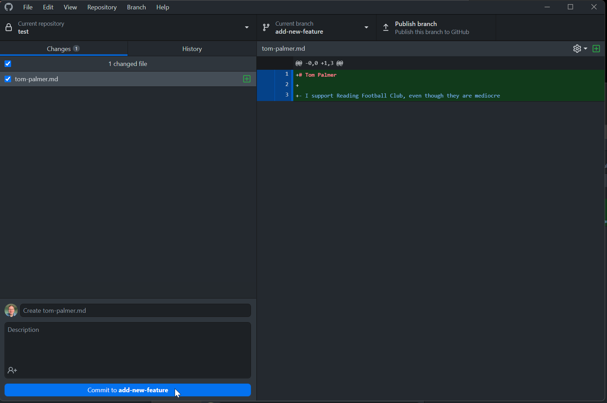
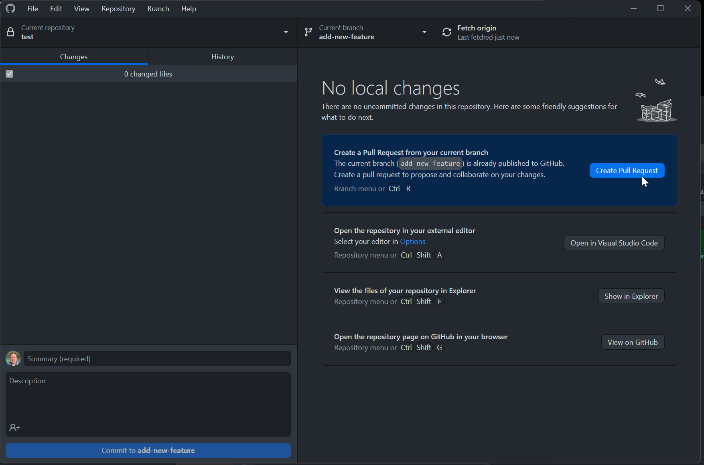
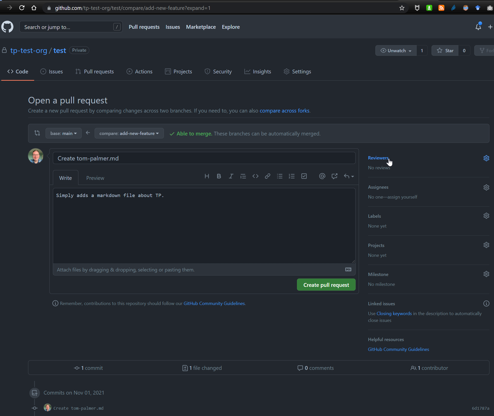
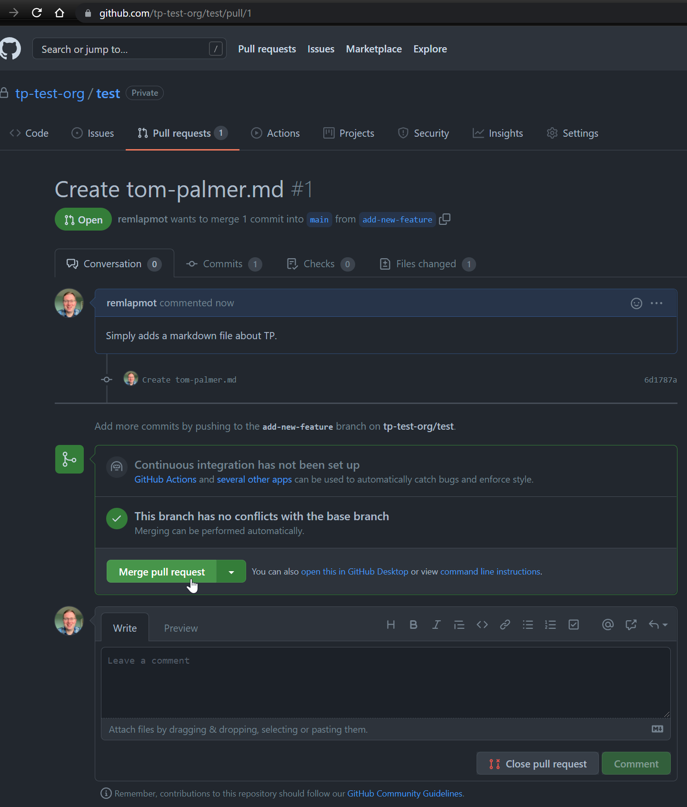
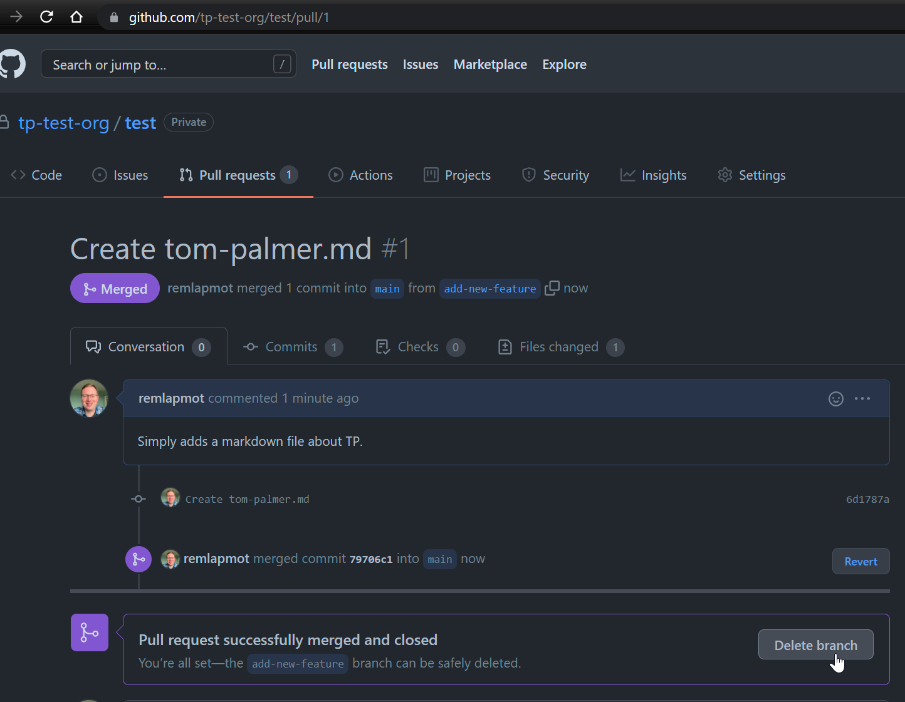
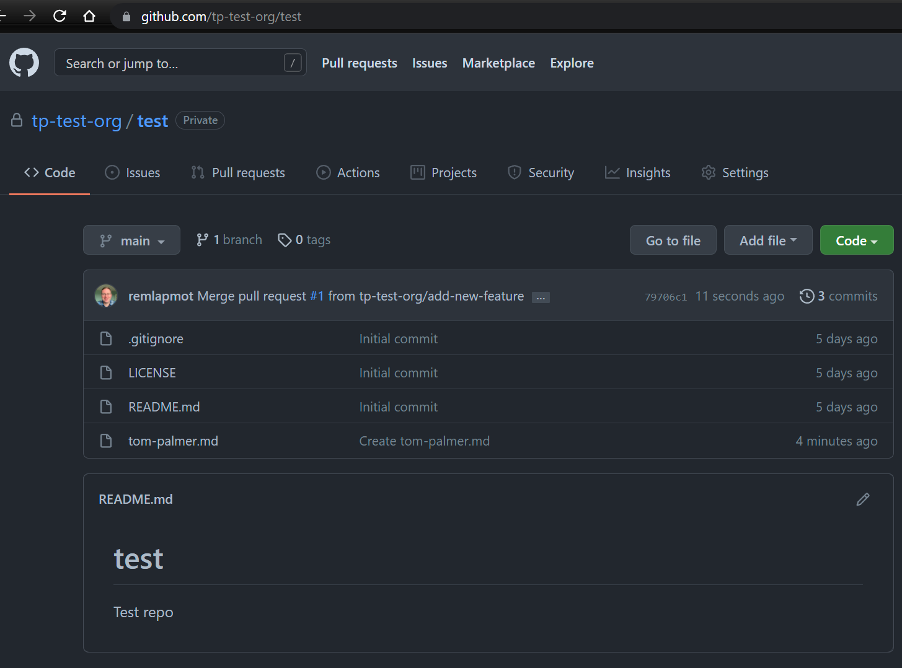

5 Making a pull request
Let’s start by creating a new branch
We do some work (in VSCode/text editor/RStudio) which creates a markdown file with a title and some text. We then make a new commit which adds this new file to the repo

Next publish the new branch to GitHub

Now initiate the creation of the PR by either clicking in GitHub Desktop “Create Pull Request”

or clicking on the button on the repo webpage “Compare & pull request”

Edit the title box, add some extra text in the comment box, select a reviewer, and then click “Create pull request”

You can amend/edit pull requests by modifying/adding commits to the branch from which you sent the PR
See more about pull request reviews here
(The reviewer) will then merge your PR

(The reviewer) will then confirm the merge

(Optional) Delete the branch the PR came from

The PR is now finished and we can see the merge commit in the default (
main/master) branch
In GitHub Desktop click “Fetch origin”/“Pull origin” to pull the updated
main/masterbranch down to your local machine … and the process begins again …